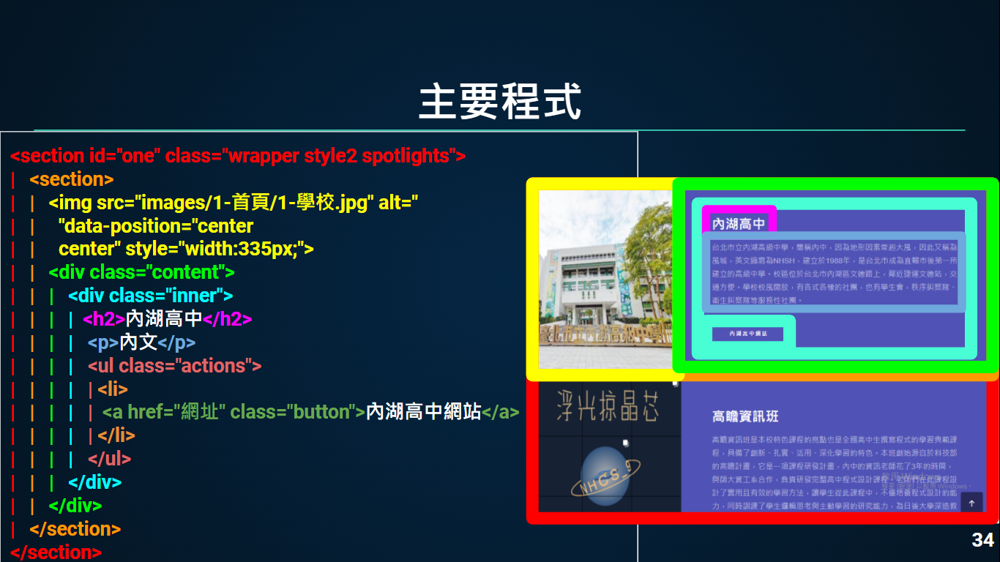
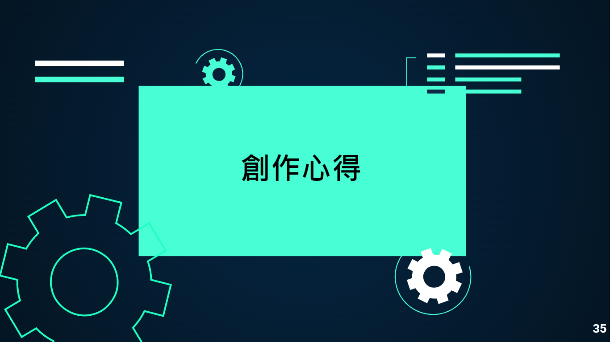

關於站主
我們是來自內湖高中308班的王永煜、呂季衡、蔡宇翔、朱冠蓁，製作這個網站的動機，是因為想讓大家更了解我們，並在日後可以回顧當時高中的點點滴滴，而在製作網站的過程中，有遇到一些問題，於是我們將解決方案與問題記錄下來，並且在結尾放上我們的製作心得。
- 
- 
我們是來自內湖高中308班的王永煜、呂季衡、蔡宇翔、朱冠蓁，製作這個網站的動機，是因為想讓大家更了解我們，並在日後可以回顧當時高中的點點滴滴，而在製作網站的過程中，有遇到一些問題，於是我們將解決方案與問題記錄下來，並且在結尾放上我們的製作心得。